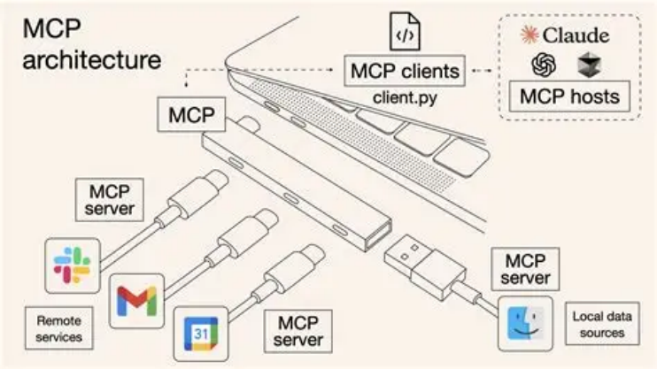

MCP Server 设计
在 MCP（Model Context Protocol）架构中，MCP Server 是整个系统的核心组件。 如果说 MCP 定义了大模型访问外部资源的协议，那么 MCP Server 则负责具体实现这些能力，并向 AI Agent 提供统一接口。
在一个完整的 AI Agent 系统中，大模型本身并不会直接访问数据库、文件系统或 API 服务，而是通过 MCP Server 进行访问。
这样做的目的有三个：
第一，实现能力的统一管理。
第二，确保系统安全与权限控制。
第三，使 Agent 架构具备良好的扩展能力。

因此，一个成熟的 MCP Server 通常不仅仅是一个简单的工具接口，而是一个完整的 能力管理平台。 从系统设计角度来看，MCP Server 通常包含三个核心模块：
-
1 MCP Server -
2 ├──
Tool Registry -
3 ├──
Context Provider -
4 └──
Resource Provider
这三个模块分别负责 工具管理、上下文提供以及资源访问。
Tool Registry
Tool Registry（工具注册中心）是 MCP Server 中最核心的组件之一，它负责管理系统中所有可调用 工具。
在 AI Agent 系统中，工具可能来自多个不同来源，例如：
-
企业内部 API
-
数据查询服务
-
自动化任务脚本
-
第三方 SaaS 服务
-
搜索引擎接口
如果没有统一的管理方式，随着系统规模扩大，工具数量会迅速增加，最终导致系统难以维护。因 此，MCP Server 通常会通过 Tool Registry 统一管理所有工具。
Tool Registry 主要承担以下职责。
第一，工具注册。
开发者可以将新的工具注册到系统中，并为其定义 Schema，包括：
-
工具名称
-
工具描述
-
参数结构
-
调用方式
例如：
1 { 2 "name": "search_documents", 3 "description": "Search documents in the knowledge base", 4 "parameters": { 5 "type": "object", 6 "properties": { 7 "query": { 8 "type": "string" 9 } 10 }, 11 "required": ["query"] 12 } 13 }
第二，工具发现。
当 AI Agent 启动时，MCP Server 可以向 Agent 提供当前系统支持的所有工具列表，使模型能够在推 理过程中选择合适的工具。
第三，工具调度。 当模型发起 Tool Calling 请求时，MCP Server 会根据工具名称找到对应实现，并执行调用。 通过 Tool Registry，AI Agent 系统可以实现 工具的统一管理与动态扩展。
Context Provider
在传统的 LLM 应用中，模型的上下文通常只包括：
-
用户输入
-
系统 Prompt
-
历史对话
然而在复杂业务系统中，模型往往需要访问更多上下文信息，例如：
-
用户资料
-
历史订单数据
-
企业知识库
-
系统状态信息
如果这些信息全部通过 Prompt 传递，不仅会导致上下文过长，还会增加 Token 成本。 因此 MCP 引入了 Context Provider（上下文提供器） 机制，用于在推理过程中动态提供上下文数 据。
Context Provider 的主要作用包括：
第一，动态获取上下文信息。
例如，当用户询问订单状态时，Agent 可以通过 Context Provider 获取用户订单信息，而不是让用户 手动提供。
第二，减少 Prompt 复杂度。
通过按需获取上下文，可以避免将大量无关信息放入 Prompt。
第三，提高推理准确性。
模型可以获取更加准确和最新的数据，从而减少错误回答。 在实际系统中，Context Provider 可能连接以下数据源：
-
用户数据库
-
CRM 系统
-
知识库
-
日志系统
-
向量数据库
因此，它可以被理解为 模型的动态上下文获取层。
Resource Provider
除了工具和上下文之外，AI Agent 在执行任务时还可能需要访问各种资源，例如：
-
文件系统
-
图片或视频数据
-
文档内容
-
外部 API
-
云存储资源
这些资源通常以不同形式存在，如果直接暴露给模型会增加系统复杂度。因此 MCP Server 通常通过 Resource Provider（资源提供器） 统一管理这些资源。 Resource Provider 的核心职责包括：
第一，资源访问接口。
为 Agent 提供统一的资源访问方式，例如读取文件、获取文档或下载数据。
第二，资源权限控制。 确保模型只能访问授权资源，避免数据泄露。
第三，资源格式转换。
将不同类型的数据转换为模型可理解的格式，例如文本或结构化数据。 例如，一个 Resource Provider 可能提供以下能力：
-
read_file：读取文件内容 -
get_document：获取知识库文档 -
download_image：获取图片资源
这样，AI Agent 就可以通过 MCP Server 访问各种资源，而不需要直接操作底层系统。
MCP Server 的整体作用
在完整的 AI Agent 系统中，MCP Server 通常扮演 能力基础设施层 的角色。 它主要承担以下职责：
统一能力管理
所有工具、数据源和资源都通过 MCP Server 统一管理。 系统能力扩展
新增工具或数据源时，只需要在 MCP Server 中注册即可。
上下文管理
通过 Context Provider 为模型提供动态上下文。
资源访问控制
通过 Resource Provider 管理系统资源并控制访问权限。
因此，在大型 AI Agent 系统中，MCP Server 往往成为连接 LLM、工具系统以及企业数据平台 的关键 基础设施。
至此，本章介绍了 Tool Calling、Function Calling 以及 MCP（Model Context Protocol） 的核心 原理，并进一步说明了 MCP Server 的设计方法。 这些技术共同构成了现代 AI Agent 系统中 连接大模型与真实世界能力的关键机制。